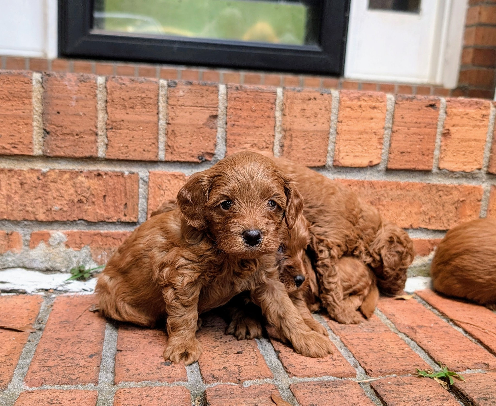

Raised in Our Home
Puppies are raised around everyday sights, sounds, and gentle handling so they can begin life feeling secure and loved.
Welcome
We're so glad you're here. Choosing a puppy is an important decision, and we're honored you're considering our program.
Our goal is to raise Cavapoos with the health, temperament, and loving personalities families are hoping for. Every puppy is cared for with intention from the very beginning, so they can grow into confident companions and cherished members of the family.
Our Promise
We believe every puppy deserves the best possible start. That means a clean, loving home environment, thoughtful socialization, careful attention to health, and continued support for our puppy families.
Learn more about us
Why families choose us
Puppies are raised around everyday sights, sounds, and gentle handling so they can begin life feeling secure and loved.
We prioritize responsible pairing, veterinary care, and the long-term well-being of every puppy we raise.
Our focus is on affectionate, confident companions that can thrive in loving family homes.
We want our families to feel supported before, during, and after their puppy comes home.

Meet our dogs
Our parent dogs are an important part of our program. Each one has their own personality, temperament, and special place in our home.
Meet Our DogsKind words
“Georgia Cavapoos made the process feel personal, thoughtful, and easy. We could tell how loved our puppy was from the very beginning.”
— Future testimonial placeholderQuestions
Start by completing our puppy application. Once approved, we will keep you updated as future litters are planned.
We do not currently have puppies available. We are accepting applications for upcoming litters.
Puppies typically go home when they are old enough, healthy, and ready for the transition. Exact timing depends on each litter.
Whether you're just beginning your search or ready to join our waitlist, we'd love to hear from you.
Join Our Waitlist